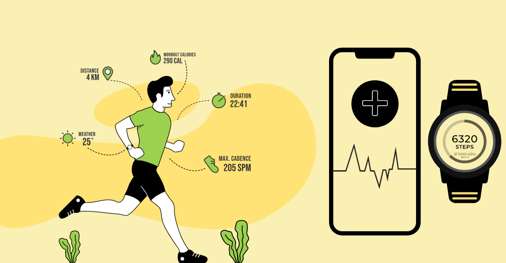

In this project, I analyzed Fitbit user behavior by looking closely at their activity levels, sleep patterns, and
how frequently they used the device. Subsequently, I applied the insights to another smart device company.

I utilized SQL to perform data cleaning, manipulation,
and aggregation to study user patterns with smart devices.

This dashboard illustrates key discoveries from my study on smart device usage.
In this project, I conducted a thorough analysis on COVID-19. I began by studying Canada's infection and death rates.
Then, I delved into regional insights, assessing various metrics across different locations and continents. Finally, I concentrated on global case and death figures.

This Tableau dashboard was created to showcase key findings from COVID-19 analysis.
In this project, I thoroughly explored what variables affect movie gross earnings. Initially, I identified the key factors highly correlated with revenue.
Then, I analyzed revenue trends linked to companies, genres, stars, and years through various plotted graphs.
This was a school project where I conducted a geographic analysis of violent crimes in Toronto.
I employed R to plot data and ran a permutation test to determine if downtown area exhibited higher crime rates compared to other locations.